N-D Test Functions X¶
N-D Test Functions X¶Xin-She Yang 1 test objective function.
This class defines the Xin-She Yang 1 global optimization problem. This is a multimodal minimization problem defined as follows:

The variable 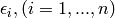 is a random variable uniformly distributed in ![[0, 1]](_images/math/ab178d831a786b92cb4c9ddc2d33578223036f98.png) .
.
Here,  represents the number of dimensions and
represents the number of dimensions and ![x_i \in [-5, 5]](_images/math/b7a53fa3c9c2f313c2a86c222fdfbbeaf4b5a3ed.png) for
for  .
.
Two-dimensional Xin-She Yang 1 function
Global optimum:  for
for  for
for
Xin-She Yang 2 test objective function.
This class defines the Xin-She Yang 2 global optimization problem. This is a multimodal minimization problem defined as follows:
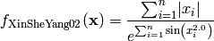
Here, represents the number of dimensions and 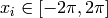 for .
Two-dimensional Xin-She Yang 2 function
Global optimum: for for
Xin-She Yang 3 test objective function.
This class defines the Xin-She Yang 3 global optimization problem. This is a multimodal minimization problem defined as follows:
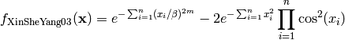
Where, in this exercise, 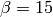 and  .
.
Here, represents the number of dimensions and 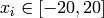 for .

Two-dimensional Xin-She Yang 3 function
Global optimum:  for for
for for
Xin-She Yang 4 test objective function.
This class defines the Xin-She Yang 4 global optimization problem. This is a multimodal minimization problem defined as follows:
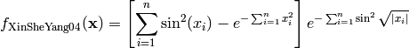
Here, represents the number of dimensions and ![x_i \in [-10, 10]](_images/math/d511ca3206c16bae3e3af3c02835f3fe9fb07286.png) for .
for .
Two-dimensional Xin-She Yang 4 function
Global optimum: for for
Xor test objective function.
This class defines the Xor global optimization problem. This is a multimodal minimization problem defined as follows:
![f_{\text{Xor}}(\mathbf{x}) = \left[ 1 + \exp \left( - \frac{x_7}{1 + \exp(-x_1 - x_2 - x_5)} - \frac{x_8}{1 + \exp(-x_3 - x_4 - x_6)} - x_9 \right ) \right ]^{-2} \\
+ \left [ 1 + \exp \left( -\frac{x_7}{1 + \exp(-x_5)} - \frac{x_8}{1 + \exp(-x_6)} - x_9 \right ) \right] ^{-2} \\
+ \left [1 - \left\{1 + \exp \left(-\frac{x_7}{1 + \exp(-x_1 - x_5)} - \frac{x_8}{1 + \exp(-x_3 - x_6)} - x_9 \right ) \right\}^{-1} \right ]^2 \\
+ \left [1 - \left\{1 + \exp \left(-\frac{x_7}{1 + \exp(-x_2 - x_5)} - \frac{x_8}{1 + \exp(-x_4 - x_6)} - x_9 \right ) \right\}^{-1} \right ]^2](_images/math/879799c74892110b6eb0ea520c7572c4ad7c4f33.png)
Here, represents the number of dimensions and ![x_i \in [-1, 1]](_images/math/69d20098894c45659a72bd07f85a904ff6726b1e.png) for 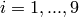.
for 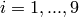.
Global optimum: 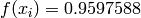 for 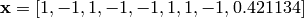